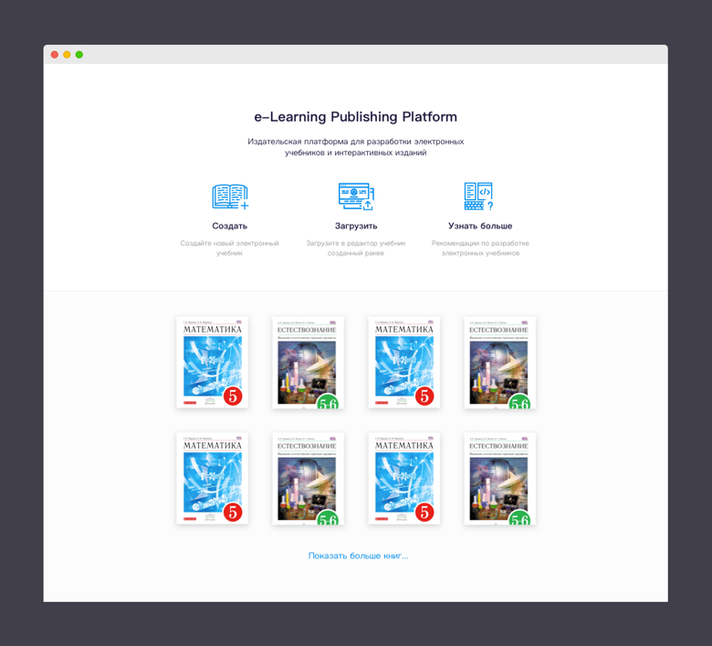
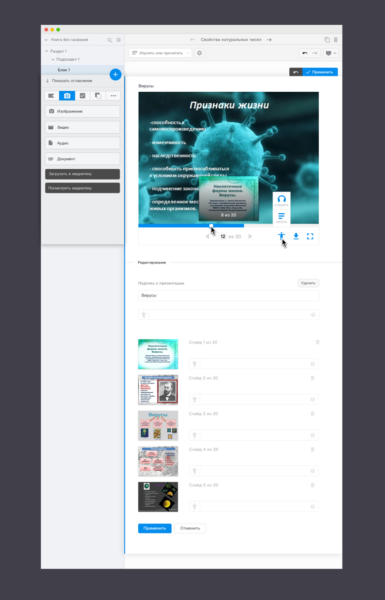
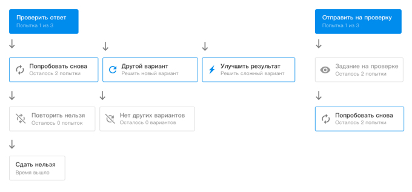
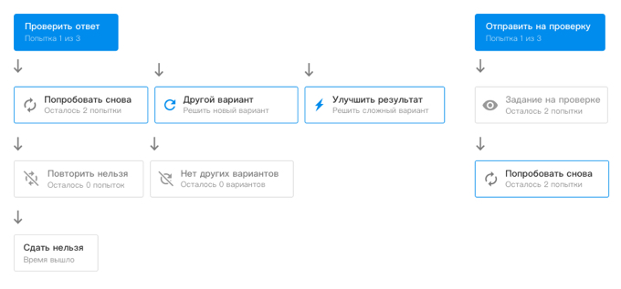

Платформа для публикации учебников
Это большой проект, целью которого является разработка онлайн-платформы для создания, дистрибьюции и потребления электронных учебников.
Предполагает представление теоретического материала в разных форматах (текст, аудио, видео, презентации), создание интерактивных заданий (ответы с множественным выбором, drag-n-drop, построение графиков и диаграм, матрицы и т.д.), связь ученик-преподаватель, родитель-преподаватель и другие функции.

Так выглядит навигация внутри учебника:
А это структура задания:
Проектирование интерфейса
В этом проекте я дорисовывала адаптивные версии экранов, заканчивала начатые экраны, отрисовывала разные состояния элементов, делала презентационные материалы, проектировала новые типы заданий, медиаматериалов или элементов.
Стартовая страница редактора: 
Редактирование текста:

Работа с медиаплеером
На платформе возможно размещение нескольких видов медиа материалов: изображения, аудио, видео и презентации. Мне нужно было спроектировать плеер для презентаций и доработать и унифицировать видео- и аудиоплееры.
Так выглядит плеер для презентаций в среде IDE. Презентацию можно скачать, развернуть во весь экран. При наведении на прогресс бар появляется превью слайдов. При редактировании, слайды можно менять местами, удалять и добавлять новые. Также к слайду можно добавить дополнительный пояснительный текст. 
В плеере доступны режимы аудио и чтения пояснительного текста для пользователей с ограниченными возможностями.
Видеоплеер выглядит аналогично. Появляется возможность включить субтитры и кнопки необходимые для управления видеофайлом.
Для большей наглядности и систематизации я задокументировала все состояния медиаплееров для аудио, видео и презентаций.

Работа с документацией
Большая часть моих заданий связанных с этим проектом приходилась на работу с документацией. Мне нужно было показать все экраны, состояния компонентов системы (и дорисовать их, если чего-то не хватало).
 

UI kit